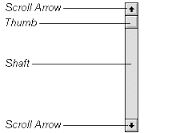
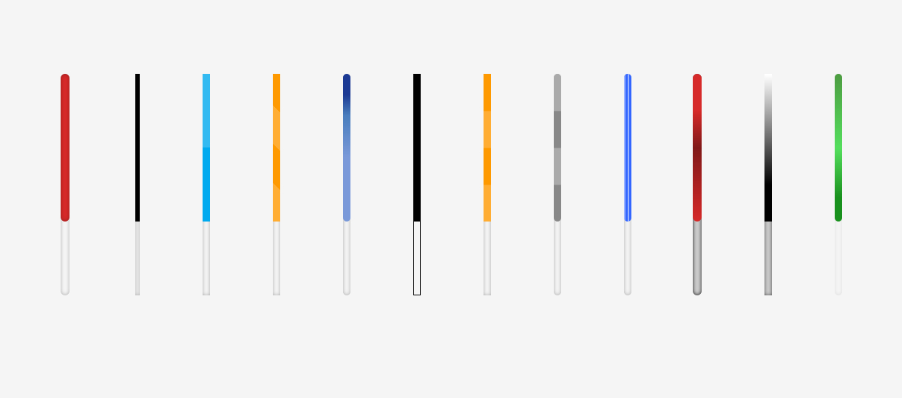

Back to homepage
History of Scrollbars
This presentation is on the history and the evolution of the scrollbars.
The Beginning of Scrollbars
First scrollbar by Smalltalk
Smalltalk (1977) Interlisp (1980) both had their scrollbars on the left side of the window
Evolution and design of scrollbars
Xerox Star (1981~1982) Scrollbar on the right side of the window
Past vs Present
Keywords in a scrollbar
Keywords within a Scrollbar
- Vertical Root
- Horizontal Root
- Vertical Small Decrease
- Horizontal Small Decrease
- Vertical Large Decrease
- Horizontal Large Decrease
- Vertical Thumb
- Horizontal Thumb
- Vertical Large Increase
- Horizontal Large Increase
- Vertical Small Increase
- Horizontal Small Increase
More detailed keywords / information of a scrollbar

Different kinds / custom-made scrollbars
Round-edge scrollbars
Sliders
Customize your own

Custom-made scrollbars
Different kinds of scrollbars
Custom-made scrollbars2
Curved scrollbar
Major platform's scrollbars
Apple
Mac OS Evolution of Scrollbars
List of Mac OS evolution of scrollbars from the first creation to the most present.

Microsoft Windows
Microsoft's Evolution of Scrollbars
List of Microsoft evolution of scrollbars from the first creation to the most present.